Trop de chats? Jamais !
Ici nous pensons qu'il n'y aura jamais trop de chats. Il est prouvé scientifiquement que les chats ont 230 os, tandis ques les humains n'en n'ont que 206 !
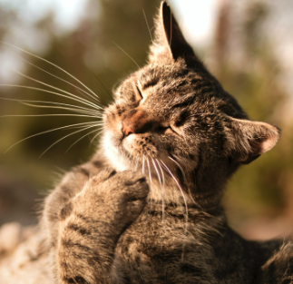
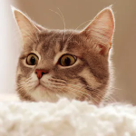
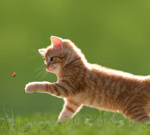
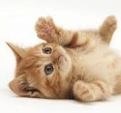
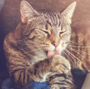
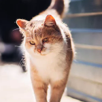
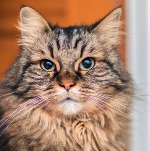
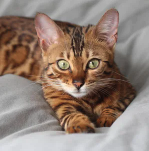
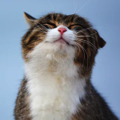
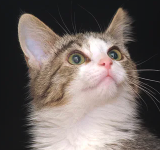
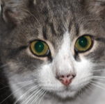
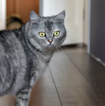
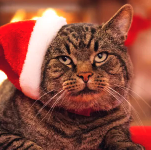
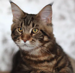
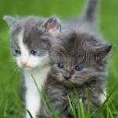
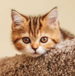
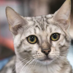
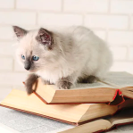
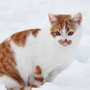
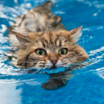
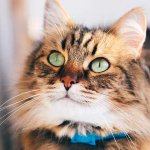